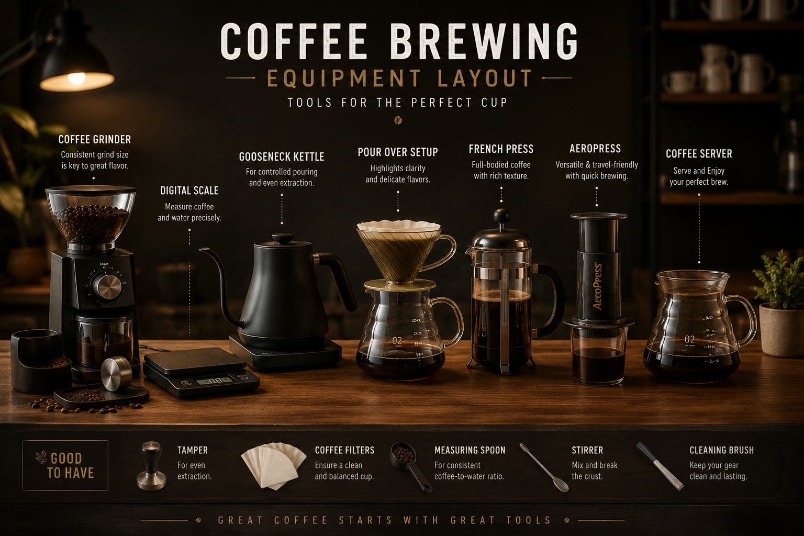
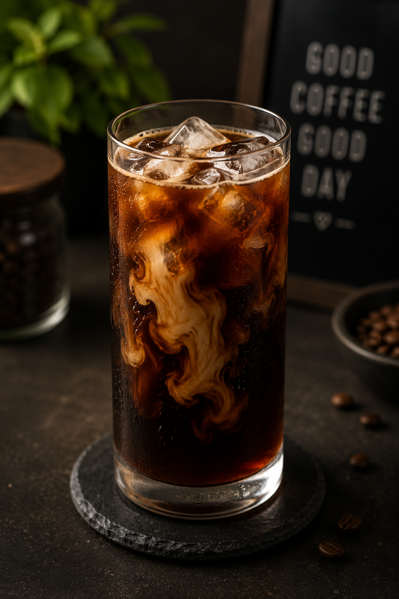
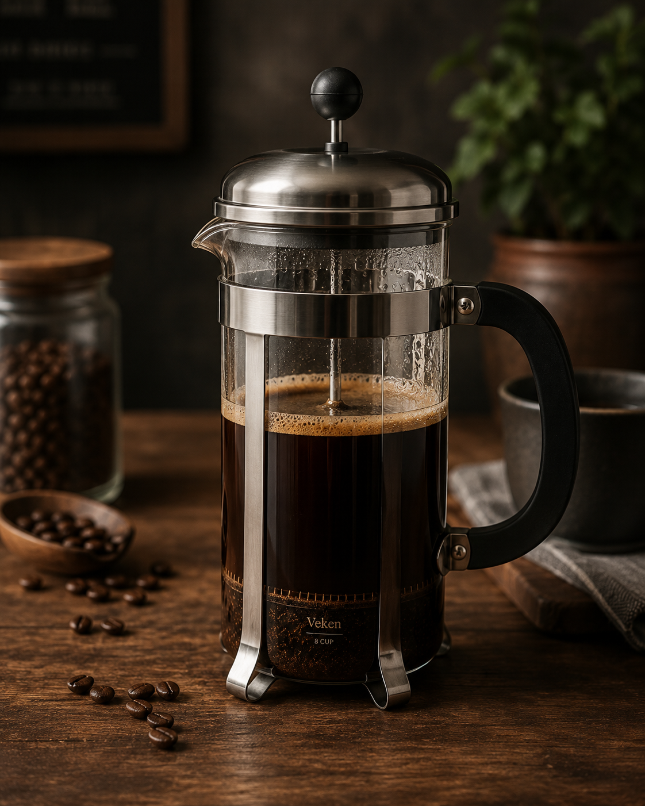

The Perfect Pawr-Over 😺
Mastering the pour-over takes a bit of patience, but the resulting cup is unmatched in flavor. Let's get brewing!
Cafe Menu & Pricing
In-House Drink Menu
| Drink |
Size |
Price |
| The Classic Pawr-Over |
12 oz |
Rs. 150 |
| Cool-Cat Cold Brew |
16 oz |
Rs. 180 |
| Fluffy Feline French Press |
24 oz |
Rs. 250 |
The Purr-fect Setup
Before we begin, ensure you have all the necessary gear ready to go.

Equipment List
What You Need
| Item |
Category |
Requirement / Usage |
| Burr Grinder |
Hardware |
Set to a medium-fine consistency |
| Gooseneck Kettle |
Hardware |
Heat water to 205°F |
| Digital Scale |
Hardware |
To measure 20g of coffee and 320g of water |
| Dripper |
Hardware |
Your brewing vessel |
| Paper Filters |
Consumable |
Rinse thoroughly with hot water before use |
| Fresh Beans |
Consumable |
20g dose for a standard cup |
Pro Tips
- Always preheat your vessel to keep the brewing temperature stable.
- Rinsing the paper filter removes any unwanted papery taste.
- Freshly ground beans make the biggest difference in flavor!
How to Brew
Recipe 1: The Classic Pawr-Over
- The Prep: Heat your water to 205°F. Place the filter in the dripper and rinse it thoroughly with hot water. Dump the rinse water. Grind 20g of coffee to a medium-fine consistency and add it to the filter, giving it a gentle shake to level the bed.
- The Bloom: Start your timer and pour 40g of water, ensuring all the grounds are saturated. Wait for 45 seconds. You should see the coffee bed bubble and expand (carbon dioxide escaping).
- The Brew: Pour in slow, concentric circles starting from the center and moving outward. Pour in phases: up to 150g, let it drain slightly, then up to 250g, and finally up to your total weight of 320g.
- The Finish: The entire process should take about 3 minutes. Swirl the finished brew and enjoy.

Recipe 2: The Cool-Cat Cold Brew
- The Grind: Grind 100g of coffee very coarsely (like sea salt).
- The Mix: Add grounds to a pitcher. Pour 800g of cold or room-temperature water over the grounds.
- The Steep: Stir gently to ensure all grounds are wet. Cover and refrigerate for 16 to 24 hours.
- The Filter: Pour the mixture through a paper filter or fine mesh sieve to remove the grounds. Serve over ice!

Recipe 3: The Fluffy Feline French Press
- The Prep: Boil water and let it sit for a minute to reach about 200°F. Grind 30g of coffee coarsely.
- The Pour: Add grounds to the empty French press. Pour 500g of water directly over the grounds.
- The Steep: Set a timer for 4 minutes. Do not touch the plunger yet!
- The Plunge: After 4 minutes, gently break the top crust with a spoon. Place the lid on and slowly press the plunger down. Pour immediately.
Opening Hours
- Monday - Friday: 8:00 AM - 8:00 PM
- Saturday - Sunday: 9:00 AM - 6:00 PM
Book a Brewing Masterclass
Visit Our Roastery
XYZ, Bengaluru
Phone: 1234567890
Email: hey@anshk.dev